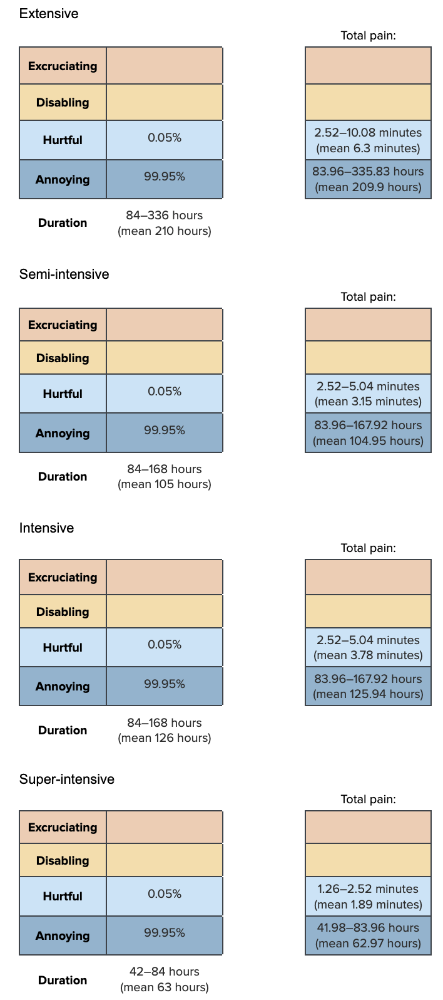
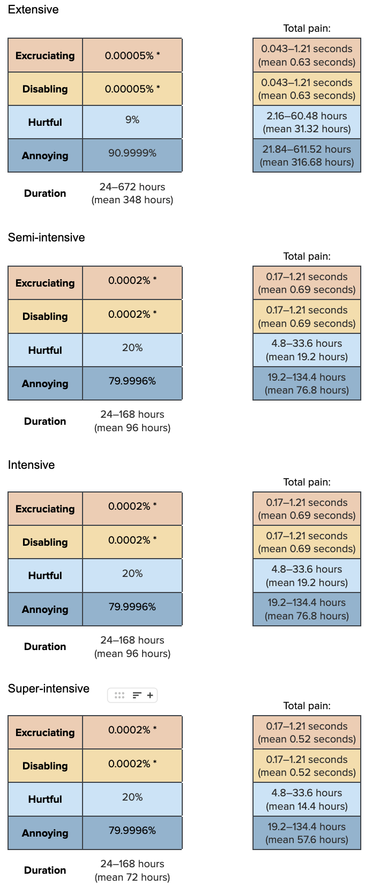

find_good_sd_binary(mean_val=0.05, tol=1e-6,
fifth_percentile=0, ninety_fifth_percentile=0.1)[1] 0.0368478Extensive farms rely solely on food produced naturally by ponds for shrimp, whereas semi-intensive farms supplement this with artificial feeds, and intensive and super-intensive farms usually rely solely on artificial feeds. To what extent these artificial feeds meet shrimp nutrient requirements is difficult to know and likely highly variable across farms, feeds, and countries.
Broadly, we expect malnutrition is not a significant problem on shrimp farms because nutrition is closely linked with shrimp growth and, therefore, farm production and profits. As such, shrimp farmers are highly incentivized to ensure shrimp meet their nutrient requirements. Additionally, the nutritional requirements of shrimp have been well-studied (e.g., Ayisi et al., 2017).
Our prevalence estimates are:
| Extensive | Semi-intensive | Intensive | Super-intensive |
|---|---|---|---|
| 0–10% (mean 5%) | 0–10% (mean 5%) | 0–10% (mean 5%) | 0–10% (mean 5%) |
find_good_sd_binary(mean_val=0.05, tol=1e-6,
fifth_percentile=0, ninety_fifth_percentile=0.1)[1] 0.0368478Sampling from beta distribution:
prev_malnu_stat <- data.frame(FarmType = c(
"Extensive", "Semi-Intensive","Intensive","Super-Intensive"),
mean = c(0.05, 0.05, 0.05, 0.05),
sd = c(0.0368478, 0.0368478, 0.0368478, 0.0368478))
prev_malnu_dist<-mapply(sample_beta, prev_malnu_stat$mean, prev_malnu_stat$sd)
colnames(prev_malnu_dist)<-prev_malnu_stat$FarmType
prev_malnu<-as.data.frame(prev_malnu_dist)
dur_malnu_ext<-rtruncnorm(n, a=84, b=336, mean=210, sd=21) # we set the standard deviation at a quarter of the lower bound
dur_malnu_semi<-rtruncnorm(n, a=84, b=168, mean=105, sd=21)
dur_malnu_int<-rtruncnorm(n, a=84, b=168, mean=126, sd=21)
dur_malnu_super<-rtruncnorm(n, a=42, b=84, mean=63, sd=10.5)
pain_malnu_ext<-data.frame(
Excruciating = 0,
Disabling = 0) %>%
cbind(sample_dirichlet(0, 0, 0.05, 99.95)) %>%
`colnames<-`(paincategories)
pain_malnu_semi<-data.frame(
Excruciating = 0,
Disabling = 0) %>%
cbind(sample_dirichlet(0, 0, 0.05, 99.95)) %>%
`colnames<-`(paincategories)
pain_malnu_int<-data.frame(
Excruciating = 0,
Disabling = 0) %>%
cbind(sample_dirichlet(0, 0, 0.05, 99.95)) %>%
`colnames<-`(paincategories)
pain_malnu_super<-data.frame(
Excruciating = 0,
Disabling = 0) %>%
cbind(sample_dirichlet(0, 0, 0.05, 99.95)) %>%
`colnames<-`(paincategories)Combine the intensity and duration information
paintrack_malnu_ext<-(dur_malnu_ext * pain_malnu_ext)
paintrack_malnu_semi<-(dur_malnu_semi * pain_malnu_semi)
paintrack_malnu_int<-(dur_malnu_int * pain_malnu_int)
paintrack_malnu_super<-(dur_malnu_super * pain_malnu_super)Then we combine prevalence, intensity, and duration of pain caused by malnutrition. The durations used in the Pain-Tracks are for the whole farming cycle, so we do not need to weight these estimations by the average days lived by a shrimp.
malnu_farms<-data.frame(
ext = paintrack_malnu_ext*prev_malnu$Extensive*prop_sample$Ext,
semi = paintrack_malnu_semi*prev_malnu$`Semi-Intensive`*prop_sample$Semi,
int = paintrack_malnu_int*prev_malnu$Intensive*prop_sample$Int,
super = paintrack_malnu_super*prev_malnu$`Super-Intensive`*prop_sample$Super)Add the pain categories across farm types and calculate the disabling-equivalent pain hours.
malnu<-malnu_farms %>%
mutate(allfarms.Annoying = ext.Annoying + semi.Annoying + int.Annoying + super.Annoying,
allfarms.Hurtful = ext.Hurtful + semi.Hurtful + int.Hurtful + super.Hurtful,
allfarms.Disabling = ext.Disabling + semi.Disabling + int.Disabling + super.Disabling,
allfarms.Excruciating = ext.Excruciating + semi.Excruciating + int.Excruciating + super.Excruciating,)
average_hours_malnu <- malnu %>%
select(starts_with("allfarms"))
average_hours_malnu$Disabling_Equivalent<- (
average_hours_malnu$allfarms.Annoying*Annoying_Weight) + (
average_hours_malnu$allfarms.Hurtful*Hurtful_Weight) +(
average_hours_malnu$allfarms.Disabling*Disabling_Weight)+(
average_hours_malnu$allfarms.Excruciating*Excruciating_Weight)
malnu_summary<-cbind(round(rbind(
(quantile(x =average_hours_malnu$allfarms.Annoying, probs = c(.05, .50, .95))),
(quantile(x =average_hours_malnu$allfarms.Hurtful, probs = c(.05, .50, .95))),
(quantile(x =average_hours_malnu$allfarms.Disabling, probs = c(.05, .50, .95))),
(quantile(x =average_hours_malnu$allfarms.Excruciating, probs = c(.05, .50, .95))),
(quantile(x =average_hours_malnu$Disabling_Equivalent, probs = c(.05, .50, .95)))), 10),
"Mean" = colMeans(average_hours_malnu))
row.names(malnu_summary)<-c(
"Annoying_malnu","Hurtful_malnu","Disabling_malnu", "Excruciating_malnu", "Disabling-Equivalent_Malnutrition")
show_table(malnu_summary)| 5% | 50% | 95% | Mean | |
|---|---|---|---|---|
| Annoying_malnu | 2.1866714 | 5.8592366 | 13.5736068 | 6.6066504 |
| Hurtful_malnu | 0.0000000 | 0.0000937 | 0.0154983 | 0.0033473 |
| Disabling_malnu | 0.0000000 | 0.0000000 | 0.0000000 | 0.0000000 |
| Excruciating_malnu | 0.0000000 | 0.0000000 | 0.0000000 | 0.0000000 |
| Disabling-Equivalent_Malnutrition | 0.0093716 | 0.0329632 | 0.0946753 | 0.0400037 |
In extensive farms, shrimp rely on the natural feed of the pond. Since shrimp can likely graze continuously in these ponds, we think shrimp in extensive farms are unlikely to be underfed. Semi-intensive, intensive and super-intensive farms provision shrimp with artificial feeds, which can be expensive (Ayisi et al., 2017), so underfeeding may be more common in these farm types due to farmers trying to save on costs. However, given the critical role of feeding in shrimp growth, we hypothesize that inadequate nutrition in shrimp farms is unlikely to be a welfare problem of significant scope.
| Extensive | Semi-intensive | Intensive | Super-intensive |
|---|---|---|---|
| 0–10% (mean 5%) | 0–25% (mean 10%) | 0–25% (mean 15%) | 0–25% (mean 15%) |
find_good_sd_binary(mean_val=0.05, tol=1e-6,
fifth_percentile=0, ninety_fifth_percentile=0.1)
find_good_sd_binary(mean_val=0.1, tol=1e-6,
fifth_percentile=0, ninety_fifth_percentile=0.25)
find_good_sd_binary(mean_val=0.15, tol=1e-6,
fifth_percentile=0, ninety_fifth_percentile=0.25)[1] 0.03699412[1] 0.1082522[1] 0.07359837Sampling from beta distribution:
prev_hunger_stat <- data.frame(FarmType = c(
"Extensive", "Semi-Intensive","Intensive","Super-Intensive"),
mean = c(0.05, 0.1, 0.15, 0.15),
sd = c(0.03699412, 0.1082522, 0.07359837, 0.07359837))
prev_hunger_dist<-mapply(sample_beta, prev_hunger_stat$mean, prev_hunger_stat$sd)
colnames(prev_hunger_dist)<-prev_hunger_stat$FarmType
prev_hunger<-as.data.frame(prev_hunger_dist)
Durations marked * equate to roughly one second at the longest duration, to account for rare instances of cannibalism due to hunger.
dur_hunger_ext<-rtruncnorm(n, a=24, b=672, mean=348, sd=87)
dur_hunger_semi<-rtruncnorm(n, a=24, b=168, mean=96, sd=24)
dur_hunger_int<-rtruncnorm(n, a=24, b=168, mean=96, sd=24)
dur_hunger_super<-rtruncnorm(n, a=24, b=168, mean=72, sd=24)
pain_hunger_ext<-data.frame(sample_dirichlet(0.00005, 0.00005, 9, 90.9999)) %>%
`colnames<-`(paincategories)
pain_hunger_semi<-data.frame(sample_dirichlet(0.0002, 0.0002, 20, 79.9996)) %>%
`colnames<-`(paincategories)
pain_hunger_int<-data.frame(sample_dirichlet(0.0002, 0.0002, 20, 79.9996)) %>%
`colnames<-`(paincategories)
pain_hunger_super<-data.frame(sample_dirichlet(0.0002, 0.0002, 20, 79.9996)) %>%
`colnames<-`(paincategories)Combine the intensity and duration information
paintrack_hunger_ext<-(dur_hunger_ext * pain_hunger_ext)
paintrack_hunger_semi<-(dur_hunger_semi * pain_hunger_semi)
paintrack_hunger_int<-(dur_hunger_int * pain_hunger_int)
paintrack_hunger_super<-(dur_hunger_super * pain_hunger_super)Finally, we combine the prevalence, intensity, and duration estimates.
hunger_farms<-data.frame(
ext = paintrack_hunger_ext*prev_hunger$Extensive*prop_sample$Ext,
semi = paintrack_hunger_semi*prev_hunger$`Semi-Intensive`*prop_sample$Semi,
int = paintrack_hunger_int*prev_hunger$Intensive*prop_sample$Int,
super = paintrack_hunger_super*prev_hunger$`Super-Intensive`*prop_sample$Super)Add the pain categories across farm types and calculate the disabling-equivalent pain hours.
hunger<-hunger_farms %>%
mutate(allfarms.Annoying = ext.Annoying + semi.Annoying + int.Annoying + super.Annoying,
allfarms.Hurtful = ext.Hurtful + semi.Hurtful + int.Hurtful + super.Hurtful,
allfarms.Disabling = ext.Disabling + semi.Disabling + int.Disabling + super.Disabling,
allfarms.Excruciating = ext.Excruciating + semi.Excruciating + int.Excruciating + super.Excruciating,)
average_hours_hunger <- hunger %>%
select(starts_with("allfarms"))
average_hours_hunger$Disabling_Equivalent<- (
average_hours_hunger$allfarms.Annoying*Annoying_Weight) + (
average_hours_hunger$allfarms.Hurtful*Hurtful_Weight) +(
average_hours_hunger$allfarms.Disabling*Disabling_Weight)+(
average_hours_hunger$allfarms.Excruciating*Excruciating_Weight)
hunger_summary<-cbind(round(rbind(
(quantile(x =average_hours_hunger$allfarms.Annoying, probs = c(.05, .50, .95))),
(quantile(x =average_hours_hunger$allfarms.Hurtful, probs = c(.05, .50, .95))),
(quantile(x =average_hours_hunger$allfarms.Disabling, probs = c(.05, .50, .95))),
(quantile(x =average_hours_hunger$allfarms.Excruciating, probs = c(.05, .50, .95))),
(quantile(x =average_hours_hunger$Disabling_Equivalent, probs = c(.05, .50, .95)))), 10),
"Mean" = colMeans(average_hours_hunger))
row.names(hunger_summary)<-c(
"Annoying_hunger","Hurtful_hunger","Disabling_hunger", "Excruciating_hunger", "Disabling-Equivalent_Hunger")
show_table(hunger_summary)| 5% | 50% | 95% | Mean | |
|---|---|---|---|---|
| Annoying_hunger | 4.5501279 | 10.5791877 | 20.866245 | 11.3716478 |
| Hurtful_hunger | 0.9143346 | 2.3252122 | 5.048459 | 2.5718200 |
| Disabling_hunger | 0.0000000 | 0.0000000 | 0.000000 | 0.0000201 |
| Excruciating_hunger | 0.0000000 | 0.0000000 | 0.000000 | 0.0000443 |
| Disabling-Equivalent_Hunger | 0.0893326 | 0.2969394 | 0.806294 | 0.3757354 |